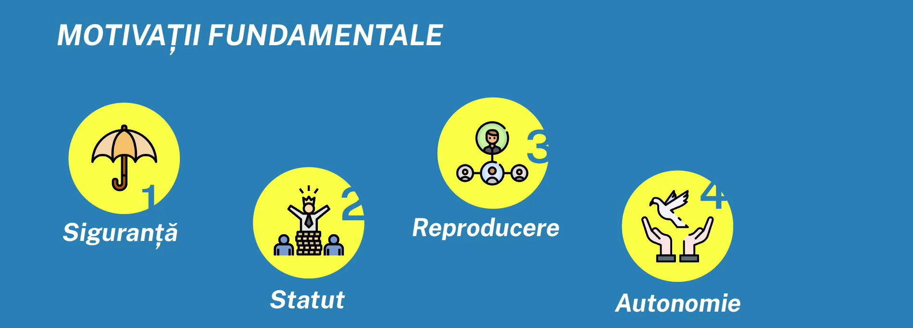
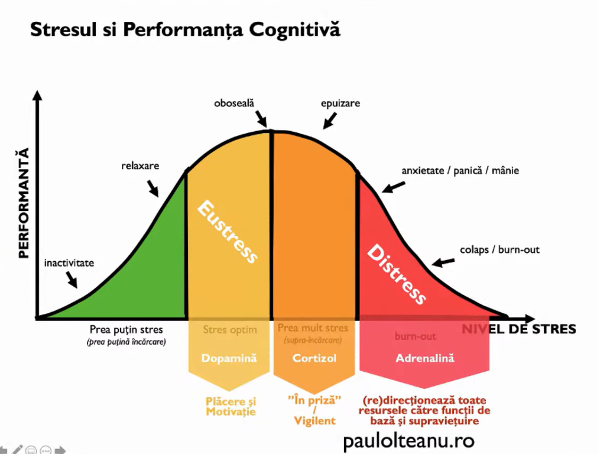

MOTIVAȚIA
Motivul este un fenomen psihic cu un rol esențial în declanșarea, orientarea și modificarea conduitei, este cauza principală a conduitei, o cauză internă. Motivația reprezintă un ansamblu structurat al motivelor, dar nu orice cauză este un motiv.
Între abordările teoretice ale problematicii psihologice a motivației se disting două direcții: direcția homeostatică și direcția non-homeostatică. În general, se consideră că baza motivației este principiul homeostatic al biologiei, conform căruia organismele tind să-și mențină aceeași stare, de echilibru constant, în raport cu modificările mediului. Dezechilibrele se traduc prin apariția unor trebuințe, provocate fie de o lipsă fie de un surplus. Între trebuințele homeostatice, cele mai studiate sunt foamea și setea, iar dintre cele non-homeostatice se află nevoia de afirmare a capacităților.
Prezența unui anumit grad de stres în activitățile cotidiene, acasă sau la job, ne poate crește nivelul de motivație pe care îl simțim, datorită eliberării dopaminei . Acest tip de stres se numește stres acut și este benefic atât pentru sănătatea fizică cât și pentru cea psihică. Totuși, dacă limita este trecută, se ajunge la stres cronic , dispare motivația și începe eliberarea de cortizol în cantități mari, pe care organismul nu le poate metaboliza.
